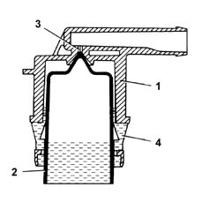
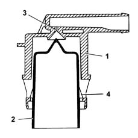
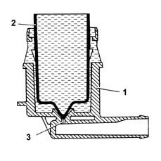
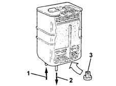
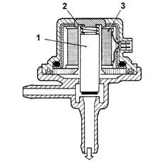
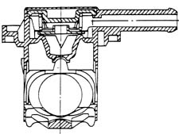
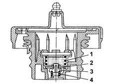

DESCRIPTION OF COMPONENTS
- Path
- Descriptions > 10 ENGINE > 1080 EMISSION CONTROL SYSTEM > 1080E EVAPORATION CONTROL SYSTEM > DESCRIPTION OF COMPONENTS
- Kind
- system description
- Applies to
- engines: 2.0 TB; all production periods
- Interactive page
- https://sloeber94.github.io/elrnDB-lThss/en/#/630143
Applies to: engines: 2.0 TB; all production periods
FLOAT VALVE
Specifications
Type
This type of valve is used to perform the following functions:
- prevent the outflow of liquid fuel in the case of rollover accidents.
- allow fuel vapours to be vented toward the separator.
- allow tank ventilation if a vacuum builds up inside.
This valve consists of a casing and float/needle valve.
Operation
Valve operation may be illustrated by the following scenarios that occur with different levels of fuel in the tank.
Full tank
If the tank is full, float (2) blocks hole (3) to prevent liquid fuel from reaching the separator.

Intermediate fuel level
When the fuel level in the tank drops, float (2) falls and its side tabs (4) rest on the slots of valve casing (1) to open hole (3).
Gases can reach the hole thorugh the ring-shaped section between float (2) and the inner housing of valve case (1).
This allows the fuel vapours to emerge from the tank and reach the separator.
The tank can be ventilated through the same circuit when internal pressure is less than external pressure.

Seal in the case of roll over.
If the vehicle rolls over, with the tank filled to any level, float (2) acts under its own weight and the weight of the fuel on hole (3) to prevent a dangerous outflow of fuel to the active carbon filters and the consequent risk of the vehicle catching fire.

FUEL VAPOUR FILTER (CANISTER)
Specifications
Type
This is fitted on the right rear wing and consists of an activated carbon filter element that absorbs fuel vapours from the separator.
One-way valve (3) allows outside air (flushing air) to come in and flow over the carbon granules to carry away the fuel vapours and convey them throught outlet (1) to the engine intake when fuel vapour solenoid (4) is open.

- 1 - One-way flushing valve.
- 2 - From multifunction valve.
- 3 - To intake manifold.
FUEL VAPOUR SOLENOID VALVE
Specifications
Type
This is fitted directly on the canister and controlled by the injection control unit in accordance with a specific strategy [DF1056B].
The solenoid is designed to allow fuel vapours stored in the canister to flow on toward the engine intake.
If the power is off, the solenoid is closed and prevents fuel vapours from enriching the mixture excessively.
OPERATION
General remarks
When electromagnet (3) is excited, it attracts valve core (1) which overcomes the load of spring (2) to bring the canister into communication with the intake manifold.

MULTIFUNCTION VALVE
Operation
Functions of the multifunction valve are as follows:
- prevent excess pressure in the tank;
- prevent vacuums in the tank;
- prevent fuel emerging in the case of rollover.

Excess pressure in tank
Tank pressurisation is maintained between 30 (45 mbar using a fluorosilicone rubber valve resting on a sealing edge).
The valve is supported by a stainless steel washer and held in place by a spring.
When tank pressure exceeds a specified level, it overcomes spring resistance and allows the valve to lift so that vapour can flow out toward the canister.
The valve re-closes when pressure drops to within specified limits.
Vacuum in reservoir
Under certain vehicle service conditions, a vacuum may build up in the tank due to the effect of:
- thermal changes;
- fuel consumption.
In this case, the valve's function is build up tank pressure by letting air in.
A fault in this function may lead to juddering or stalling because the electric pump lacks power.
This function is performed by the goose-bill valve made directly on the fluorosilicone washer.
Escape of fuel in the case of roll over.
The roll-over function prevents fuel emerging from the tank if the vehicle rolls over or tilts too far to one side.
During normal vehicle operation (cornering, acceleration, braking etc.), the fuel slops around and may spill over onto the canister.
The high rollover sensitivity prevents this spillage taking place.
The roll-over closure angle is less than 33°.
SAFETY AND VENTILATION VALVE
Operation
This valve is built into the fuel filler fitting and performs the following functions according to pressure present in the tank.
Excess pressure in tank
When tank pressure exceeds a specified value, it acts on plate (2) and overcomes the load on spring (1) so that excess vapours can be vented to the outside.
Vacuum in reservoir
When an excessive vacuum builds up in the tank due to fuel consumption, it overcomes the load of spring (4) and moves valve (3) to allow air to be taken in.
